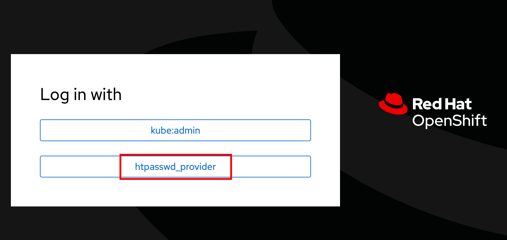

Red Hat OpenShift AI Administration
Welcome to this quick course on the Red Hat OpenShift AI Administration. This course is the second in a series of five courses about Red Hat OpenShift AI:
-
Red Hat OpenShift AI Administration (This course)
| After you have completed all the courses in the learning path, you can attempt the "Workshop final hands-on lab", that tests your understanding of the concepts taught in all the courses. |
Authors
The PTL team acknowledges the valuable contributions of the following Red Hat associates:
-
Jiri Tesar
-
Jaime Ramirez Castillo
-
Max Murakami
-
Trevor Royer
-
John Hurlocker
-
Ravi Srinivasan
Classroom Environment for Red Hat Associates
Red Hat associates should use the Red Hat Demo Platform to provision a classroom.
Use the Red Hat OpenShift Container Platform Cluster catalog item from Red Hat Demo Platform (RHDP).
When ordering this demo item:
-
Select
Practice/Enablementfor theActivityfield, andLearning about the productfor thePurpose. -
If you have a Salesforce ID for a customer sales opportunity, then copy it to the
Salesforce IDfield. Otherwise, add some random text like "Learning RHOAI". -
Select 5 users in the
User Countfield. Having at least two users is required for the user management exercise. -
In the
OpenShift worker memory sizefield, select64Gi. This size might be required if you run multiple workbenches and pipelines simultaneously. -
In the
OpenShift versionfield, select the latest stable version available. -
Review the auto-stop and auto-destroy timers. You can change this later after classroom provisioning by opening a ticket with the RHDP team.
|
RHOAI workbenches and pipelines use large container images. Dependencies such as Tensorflow, PyTorch, or CUDA result in image sizes of several gigabytes. The data ingestion and training stages can demand large amounts of memory and CPU/GPU resources. Make sure that your worker nodes have enough memory to accommodate pods that consume dozens of GB. |
This classroom does NOT have RHOAI pre-installed. You install and configure a basic RHOAI instance, and then continue using this instance with other courses in the learning path.
Alternative classroom environment on AWS for Red Hat Associates
You can also use an AWS cluster by ordering the AWS with OpenShift Open Environment.
This classroom does NOT have RHOAI pre-installed. You install and configure a basic RHOAI instance, and then continue using this instance with other courses in the learning path.
If you use this item, you must:
-
Select
Practice/Enablementfor theActivityfield, andLearning about the productfor thePurpose. -
If you have a Salesforce ID for a customer sales opportunity, then copy it to the
Salesforce IDfield. Otherwise, add some random text like "Learning RHOAI". -
Make sure that you select
3as the control plane count and the latest OpenShift version. -
Select your nearest AWS region and choose
m6a.4xlargeas the instance type (Ensure that whatever instance type you choose has at least 16 vCPUs and 64GB RAM). -
Review the auto-stop and auto-destroy timers. You can change this later after classroom provisioning by opening a ticket with the RHDP team.
-
Configure users and authentication. The AWS item is only pre-configured with the
kubeadminuser, which does not have thecluster-adminrole assigned. The exercises in this course, however, assume the existence of a user namedadminwith thecluster-adminrole and five non-admin users (user1…user5). Download the following two scripts to your local machine, and execute the following commands.-
$ oc replace -f authentication.yaml $ oc apply -f secret.yaml
The password for both the admin and user1…user5 users is openshift23.
-
You may have to wait for 5 minutes while the changes take effect. You will see a log in prompt with the
htpasswd_providerdisplayed.Figure 1. htpasswd_provider prompt -
Click the
htpasswd_providerbutton, and log in as theadminuser with passwordopenshift23to access the OpenShift web console as a cluster administrator.
Classroom Environment for Red Hat Partners
Red Hat partners should provision their own Red Hat OpenShift cluster using the Red Hat Hybrid Cloud Console at https://console.redhat.com/openshift/overview.
-
Ensure that you provision an OpenShift 4.13 or later cluster with a minimum of 3 control plane nodes (each with 8vCPU and 16GB RAM), and 3 worker nodes (each with 16 vCPU, and 64GB of RAM).
-
Configure users and authentication. A default OpenShift cluster installation has a user called
kubeadmin. The exercises in this course, however, assume the existence of a user namedadminwith thecluster-adminrole and five non-admin users (user1…user5). Download the following two scripts to your local machine, and execute the following commands after logging in to your cluster as thekubeadminuser using theocCLI tool.-
$ oc replace -f authentication.yaml $ oc apply -f secret.yaml
The password for both the admin and user1…user5 users is openshift23.
-
You may have to wait for 5 minutes while the changes take effect. You will see a log in prompt with the
htpasswd_providerdisplayed.Figure 2. htpasswd_provider prompt -
Click the
htpasswd_providerbutton, and log in as theadminuser with passwordopenshift23to access the OpenShift web console as a cluster administrator.
Prerequisites
-
Basic knowledge of OpenShift (or Kubernetes) administration
-
Building and deploying container images
-
OpenShift User and Role administration
-
Basic knowledge of AWS EC2 and S3 services
Objectives
The overall objectives of this course include:
-
Installing RedHat OpenShift AI using the web console and CLI
-
Upgrading RedHat OpenShift AI components
-
Managing RedHat OpenShift AI users and controlling access
-
Enabling GPU support in RedHat OpenShift AI
-
Stopping idle notebooks
-
Create and configure a custom notebook image